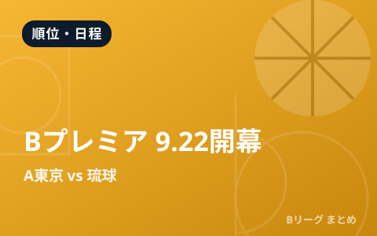

新リーグ「Bプレミア」2026-27が9月22日開幕 アルバルク東京vs琉球で幕開け

2026-27シーズンから、B.LEAGUEのトップカテゴリが新たに「B.LEAGUE PREMIER（Bプレミア）」へと生まれ変わります。開幕は2026年9月22日。開幕カードはアルバルク東京 vs 琉球ゴールデンキングスで、会場はTOYOTA ARENA TOKYO。シーズンテーマは『シン・バスケ』です。新リーグの基本をまとめました。
「Bプレミア」とは？
Bプレミアは、これまでのB1に代わる新しいトップリーグです。アリーナの規模や観客動員、経営などの基準を満たしたクラブが参戦でき、競技面だけでなく事業面でもより高いレベルを目指すのが特徴です。リーグは東西2つの地区（カンファレンス）に分かれて戦います。日本バスケをさらに大きく成長させるための“リニューアル”と位置づけられています。
| 項目 | 内容 |
|---|---|
| 開幕日 | 2026年9月22日 |
| 開幕カード | アルバルク東京 vs 琉球ゴールデンキングス |
| 会場 | TOYOTA ARENA TOKYO |
| シーズンテーマ | 『シン・バスケ』 |
| リーグ構成 | 東西2地区制 |
開幕カードに込められた意味
アルバルク東京 vs 琉球という開幕カードは、B.LEAGUEがスタートした2016年9月22日の開幕戦と同じ顔合わせです。新リーグの幕開けを、リーグの原点と重ねる象徴的な一戦となります。バスケの新時代を告げるにふさわしい、注目の開幕戦です。
何が変わる？ファンの楽しみ方
カテゴリの名称やリーグ構成が変わっても、応援するクラブを追いかける楽しさは変わりません。むしろ、アリーナ観戦の体験向上や対戦カードの魅力アップが期待されます。前季王者・長崎ヴェルカがどう戦うか、各クラブの補強がどう実を結ぶかなど、見どころは盛りだくさんです。前季のチャンピオンシップの結果はこちらの記事をどうぞ。
Q. これまでのB1はなくなるの？
A. トップカテゴリが「Bプレミア」へとリニューアルされる形です。参戦クラブや詳しい構成は、B.LEAGUE公式サイトで最新情報をご確認ください。
出典：B.LEAGUE公式『シン・バスケ』2026-27 開幕特設サイト ほか
https://www.bleague.jp/opening2026-27/